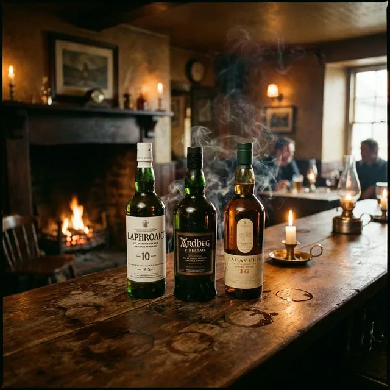

燻製！？正露丸！？一度ハマると抜け出せない「アイラ・モルト」の魔力とおすすめ3選
「正露丸のようなにおい」「煙を飲んでいるみたい」…そんな悪評（？）さえも勲章に変えてしまうのが、スコットランド・アイラ島のウイスキーです。
一度その魔力に囚われると、もう普通の「甘い」ウイスキーでは物足りなくなってしまう。そんな中毒性の高いアイラ・モルトの世界へようこそ。
この記事では、アイラ・モルトの中でも特に際立った個性を持つ3つの銘柄を紹介します。

1. アードベッグ 10年 (Ardbeg)
「究極のアイラ・モルト」と称される一本です。
強烈なピートスモーク（焚き火のような煙）がありながら、その奥に繊細なレモンのような柑橘系の甘みを感じるのが最大の特徴。
- おすすめの飲み方: ハイボール。スモーキーさが弾けて最高です。
- 価格帯: 6,500円〜7,500円
2. ラフロイグ 10年 (Laphroaig)
「好きになるか、嫌いになるか（Love it or Hate it）」というあまりにも有名なキャッチコピーを持つ、アイラの象徴。
強烈な薬品のような香り（ヨード香）が特徴で、まさに「正露丸」と言われる所以。しかし、一度ハマるとこの香りと甘みの共演が癖になります。
- おすすめの飲み方: ストレート、または少量の加水。
- 価格帯: 6,000円〜7,000円
3. ボウモア 12年 (Bowmore)
「アイラの女王」と呼ばれる、非常にバランスの取れた一本。
アードベッグやラフロイグよりも煙たさは控えめで、潮の香りとハチミツ、チョコレートのような甘みが優雅に調和しています。初心者の「アイラ入門」に最適です。
- おすすめの飲み方: ロック、またはハイボール。
- 価格帯: 5,000円〜6,000円
まとめ：勇気を出して、一歩踏み出そう
アイラ・モルトは、決して「万人受け」するお酒ではありません。
しかし、その強烈な個性は一生モノの趣味になり得ます。
もしあなたが「何か新しい刺激が欲しい」と思っているなら、今夜はアイラ・モルトを一杯、試してみませんか？